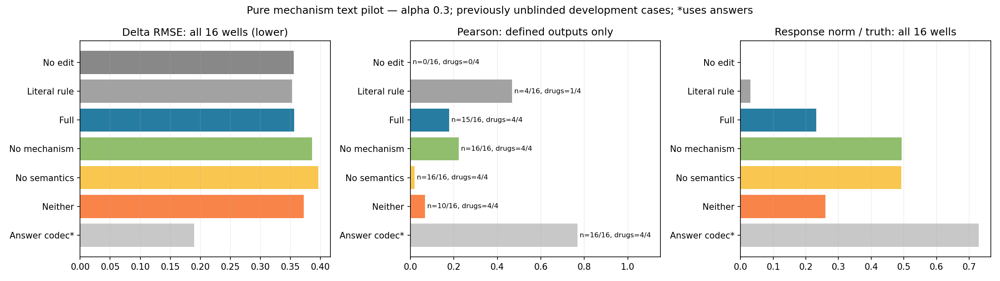

预设主方案未优于不编辑：ΔRMSE 0.356299 vs 0.355724。16个已揭盲开发孔，786处理细胞、951对照，四药5µM/24h/A549。

主alpha=.3；.1/.6只作敏感性，不按答案选。相关性仅对非零、非恒定预测定义，下面标明有效孔/药数量；RMSE所有方法均覆盖16孔。
| delta_rmse | delta_pearson | delta_cosine | top100_delta_rmse | top100_direction_accuracy | response_l2_ratio | correlation_defined_wells | correlation_defined_drugs | |
|---|---|---|---|---|---|---|---|---|
| method | ||||||||
| no_edit | 0.355724 | NaN | NaN | 0.963622 | 0.000000 | 0.000000 | 0/16 | 0/4 |
| literal_keyword_a0.3 | 0.352798 | 0.468036 | 0.467383 | 0.946353 | 0.155625 | 0.030176 | 4/16 | 1/4 |
| full_joint_a0.3 | 0.356299 | 0.178036 | 0.192438 | 0.935017 | 0.595000 | 0.232300 | 15/16 | 4/4 |
| no_mechanism_joint_a0.3 | 0.386305 | 0.222138 | 0.030907 | 0.931294 | 0.513125 | 0.493435 | 16/16 | 4/4 |
| no_semantics_joint_a0.3 | 0.396323 | 0.020432 | -0.078928 | 0.959142 | 0.510000 | 0.491467 | 16/16 | 4/4 |
| neither_joint_a0.3 | 0.372037 | 0.067064 | -0.012015 | 0.953915 | 0.326875 | 0.259324 | 10/16 | 4/4 |
| answer_codec_diagnostic | 0.189778 | 0.767934 | 0.782928 | 0.372516 | 0.971250 | 0.729222 | 16/16 | 4/4 |
| method | drug | delta_rmse | delta_pearson | delta_cosine | top100_delta_rmse | top100_direction_accuracy | response_l2_ratio |
|---|---|---|---|---|---|---|---|
| full_joint_a0.3 | BMS | 0.483858 | 0.245146 | 0.433501 | 1.136495 | 0.765000 | 0.055905 |
| full_joint_a0.3 | Dex | 0.217931 | 0.126169 | 0.159453 | 0.528577 | 0.697500 | 0.373403 |
| full_joint_a0.3 | Nutlin | 0.244741 | 0.023030 | 0.032786 | 0.701672 | 0.555000 | 0.321172 |
| full_joint_a0.3 | SAHA | 0.478664 | 0.317801 | 0.144013 | 1.373323 | 0.362500 | 0.178718 |
| full_local_a0.3 | BMS | 0.489880 | 0.326821 | 0.205634 | 1.138474 | 0.620000 | 0.109305 |
| full_local_a0.3 | Dex | 0.221564 | 0.094095 | 0.133079 | 0.528956 | 0.695000 | 0.429811 |
| full_local_a0.3 | Nutlin | 0.248234 | 0.034752 | 0.049779 | 0.696687 | 0.560000 | 0.415715 |
| full_local_a0.3 | SAHA | 0.472396 | 0.376122 | 0.193552 | 1.339883 | 0.490000 | 0.237018 |
| literal_keyword_a0.3 | BMS | 0.496175 | NaN | NaN | 1.153759 | 0.000000 | 0.000000 |
| literal_keyword_a0.3 | Dex | 0.212305 | NaN | NaN | 0.576017 | 0.000000 | 0.000000 |
| literal_keyword_a0.3 | Nutlin | 0.221898 | 0.468036 | 0.467383 | 0.642094 | 0.622500 | 0.120703 |
| literal_keyword_a0.3 | SAHA | 0.480813 | NaN | NaN | 1.413541 | 0.000000 | 0.000000 |
| no_edit | BMS | 0.496175 | NaN | NaN | 1.153759 | 0.000000 | 0.000000 |
| no_edit | Dex | 0.212305 | NaN | NaN | 0.576017 | 0.000000 | 0.000000 |
| no_edit | Nutlin | 0.233602 | NaN | NaN | 0.711170 | 0.000000 | 0.000000 |
| no_edit | SAHA | 0.480813 | NaN | NaN | 1.413541 | 0.000000 | 0.000000 |
| delta_rmse | delta_pearson | delta_cosine | top100_delta_rmse | top100_direction_accuracy | response_l2_ratio | correlation_defined_wells | correlation_defined_drugs | |
|---|---|---|---|---|---|---|---|---|
| method | ||||||||
| answer_codec_diagnostic | 0.189778 | 0.767934 | 0.782928 | 0.372516 | 0.971250 | 0.729222 | 16/16 | 4/4 |
| full_joint_a0.1 | 0.353650 | 0.178036 | 0.192438 | 0.952402 | 0.595000 | 0.077433 | 15/16 | 4/4 |
| full_joint_a0.3 | 0.356299 | 0.178036 | 0.192438 | 0.935017 | 0.595000 | 0.232300 | 15/16 | 4/4 |
| full_joint_a0.6 | 0.374897 | 0.178036 | 0.192438 | 0.922626 | 0.595000 | 0.464599 | 15/16 | 4/4 |
| full_local_a0.1 | 0.353320 | 0.207948 | 0.145511 | 0.948814 | 0.591250 | 0.099321 | 16/16 | 4/4 |
| full_local_a0.3 | 0.358018 | 0.207948 | 0.145511 | 0.926000 | 0.591250 | 0.297962 | 16/16 | 4/4 |
| full_local_a0.6 | 0.385611 | 0.207948 | 0.145511 | 0.910421 | 0.591250 | 0.595925 | 16/16 | 4/4 |
| literal_keyword_a0.1 | 0.354670 | 0.468036 | 0.467383 | 0.957511 | 0.155625 | 0.010059 | 4/16 | 1/4 |
| literal_keyword_a0.3 | 0.352798 | 0.468036 | 0.467383 | 0.946353 | 0.155625 | 0.030176 | 4/16 | 1/4 |
| literal_keyword_a0.6 | 0.350640 | 0.468036 | 0.467383 | 0.932874 | 0.155625 | 0.060351 | 4/16 | 1/4 |
| neither_joint_a0.1 | 0.357916 | 0.067064 | -0.012015 | 0.958511 | 0.326875 | 0.086441 | 10/16 | 4/4 |
| neither_joint_a0.3 | 0.372037 | 0.067064 | -0.012015 | 0.953915 | 0.326875 | 0.259324 | 10/16 | 4/4 |
| neither_joint_a0.6 | 0.411009 | 0.067064 | -0.012015 | 0.962012 | 0.326875 | 0.518648 | 10/16 | 4/4 |
| neither_local_a0.1 | 0.358467 | 0.024138 | -0.064778 | 0.955123 | 0.519375 | 0.122036 | 16/16 | 4/4 |
| neither_local_a0.3 | 0.377359 | 0.024138 | -0.064778 | 0.945820 | 0.519375 | 0.366107 | 16/16 | 4/4 |
| neither_local_a0.6 | 0.430689 | 0.024138 | -0.064778 | 0.952657 | 0.519375 | 0.732214 | 16/16 | 4/4 |
| no_edit | 0.355724 | NaN | NaN | 0.963622 | 0.000000 | 0.000000 | 0/16 | 0/4 |
| no_mechanism_joint_a0.1 | 0.358384 | 0.222138 | 0.030907 | 0.947313 | 0.513125 | 0.164478 | 16/16 | 4/4 |
| no_mechanism_joint_a0.3 | 0.386305 | 0.222138 | 0.030907 | 0.931294 | 0.513125 | 0.493435 | 16/16 | 4/4 |
| no_mechanism_joint_a0.6 | 0.468632 | 0.222138 | 0.030907 | 0.951348 | 0.513125 | 0.986870 | 16/16 | 4/4 |
| no_mechanism_local_a0.1 | 0.358384 | 0.222138 | 0.030907 | 0.947313 | 0.513125 | 0.164478 | 16/16 | 4/4 |
| no_mechanism_local_a0.3 | 0.386305 | 0.222138 | 0.030907 | 0.931294 | 0.513125 | 0.493435 | 16/16 | 4/4 |
| no_mechanism_local_a0.6 | 0.468632 | 0.222138 | 0.030907 | 0.951348 | 0.513125 | 0.986870 | 16/16 | 4/4 |
| no_semantics_joint_a0.1 | 0.361707 | 0.020432 | -0.078928 | 0.957296 | 0.510000 | 0.163822 | 16/16 | 4/4 |
| no_semantics_joint_a0.3 | 0.396323 | 0.020432 | -0.078928 | 0.959142 | 0.510000 | 0.491467 | 16/16 | 4/4 |
| no_semantics_joint_a0.6 | 0.485527 | 0.020432 | -0.078928 | 0.999030 | 0.510000 | 0.982934 | 16/16 | 4/4 |
| no_semantics_local_a0.1 | 0.361707 | 0.020432 | -0.078928 | 0.957296 | 0.510000 | 0.163822 | 16/16 | 4/4 |
| no_semantics_local_a0.3 | 0.396323 | 0.020432 | -0.078928 | 0.959142 | 0.510000 | 0.491467 | 16/16 | 4/4 |
| no_semantics_local_a0.6 | 0.485527 | 0.020432 | -0.078928 | 0.999030 | 0.510000 | 0.982934 | 16/16 | 4/4 |
纯机制 v4 实验解释
主参数 alpha=0.3；full 相对 no-edit 的平均 ΔRMSE 降幅=-0.162%。
这是四个已揭盲药物条件的开发实验，不能从16孔或786细胞推断有16/786种独立干预。
逐药主结果：
method drug delta_rmse delta_pearson delta_cosine top100_delta_rmse top100_direction_accuracy response_l2_ratio
full_joint_a0.3 BMS 0.483858 0.245146 0.433501 1.136495 0.765000 0.055905
full_joint_a0.3 Dex 0.217931 0.126169 0.159453 0.528577 0.697500 0.373403
full_joint_a0.3 Nutlin 0.244741 0.023030 0.032786 0.701672 0.555000 0.321172
full_joint_a0.3 SAHA 0.478664 0.317801 0.144013 1.373323 0.362500 0.178718
full_local_a0.3 BMS 0.489880 0.326821 0.205634 1.138474 0.620000 0.109305
full_local_a0.3 Dex 0.221564 0.094095 0.133079 0.528956 0.695000 0.429811
full_local_a0.3 Nutlin 0.248234 0.034752 0.049779 0.696687 0.560000 0.415715
full_local_a0.3 SAHA 0.472396 0.376122 0.193552 1.339883 0.490000 0.237018
literal_keyword_a0.3 BMS 0.496175 NaN NaN 1.153759 0.000000 0.000000
literal_keyword_a0.3 Dex 0.212305 NaN NaN 0.576017 0.000000 0.000000
literal_keyword_a0.3 Nutlin 0.221898 0.468036 0.467383 0.642094 0.622500 0.120703
literal_keyword_a0.3 SAHA 0.480813 NaN NaN 1.413541 0.000000 0.000000
no_edit BMS 0.496175 NaN NaN 1.153759 0.000000 0.000000
no_edit Dex 0.212305 NaN NaN 0.576017 0.000000 0.000000
no_edit Nutlin 0.233602 NaN NaN 0.711170 0.000000 0.000000
no_edit SAHA 0.480813 NaN NaN 1.413541 0.000000 0.000000
四组决策（每例32轴）：
{
"full_joint": {
"shift_axes": 13.625,
"keep_axes": 0.0,
"unknown_axes": 18.375
},
"neither_joint": {
"shift_axes": 17.0,
"keep_axes": 0.5,
"unknown_axes": 14.5
},
"no_mechanism_joint": {
"shift_axes": 28.9375,
"keep_axes": 0.0,
"unknown_axes": 3.0625
},
"no_semantics_joint": {
"shift_axes": 32.0,
"keep_axes": 0.0,
"unknown_axes": 0.0
}
}
解释边界：
1. 只有 full 与隐藏组在同一次冻结实验中的比较，才能帮助判断机制/code文字是否有用；隐藏组允许弃权，因此若等于no-edit，应说明这是弃权结果。
2. 词面匹配只识别明确的术语和方向，是弱的透明对照，不代表完整知识图谱或通路方法。
3. alpha=.1/.6 复用以.3作反馈的同一组决策，只是幅度敏感性；不得从开发答案挑一个后声称是预设主结果。
4. joint使用自己提出的假设作为检查依据，可能自洽却生物学错误；local/joint多一次调用，不是等预算反馈消融。
5. 轴的shift数量、占用变化及主导code更换数量不同；群体边际预测不等于同一个细胞的前后转变。
6. 词典训练含其他剂量；本实验限制推理输入，不证明表示或预训练LLM从未接触相关药物知识。
7. answer-codec使用答案，是重建诊断，不是预测、理论最低误差或可提供给agent的提示。
8. 零变化输出的Pearson/cosine未定义，以NaN/空值保留，不能记成相关性0。
相关性汇总跳过未定义值：full joint为15/16孔、neither joint为10/16孔、literal为4/16孔且只Nutlin；相应均值不是相同样本范围，不能直接排序。RMSE覆盖全部16孔。
具体失败模式：Nutlin固定样例正确提出p53/细胞周期停滞，却同时保留A24高增殖状态，理由甚至写明它与停滞矛盾。它可满足少数CDKN1A等基因检查，却在未被明确约束的程序上产生反向编辑。详见decision_analysis.txt；这属于预测内部矛盾诊断，不用实验答案给模型修正。
执行与失败重试：
{
"fixed": {
"requests_recorded": 402,
"responses_recorded": 402,
"complete_case_arms": 64,
"status_counts": {
"completed": 384,
"failed": 18
},
"failure_reasons": {
"Evidence refs must cite supplied hypotheses or this axis/state": 1,
"Response fields: updates, summary, limitations": 4,
"shift requires one to three target states": 13
},
"requests_without_status": 0,
"reported_usage": {
"prompt_tokens": 14900785,
"completion_tokens": 195520,
"total_tokens": 15096305
}
},
"original_failed": {
"requests_recorded": 67,
"responses_recorded": 63,
"complete_case_arms": 7,
"status_counts": {
"failed": 12,
"completed": 51
},
"failure_reasons": {
"Hypothesis evidence refs must cite supplied M and/or C; M is absent when hidden": 10,
"Response fields: updates, summary, limitations": 1,
"shift requires one to three target states": 1
},
"requests_without_status": 4,
"reported_usage": {
"prompt_tokens": 1907660,
"completion_tokens": 32917,
"total_tokens": 1940577
}
}
}